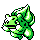
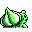

#001
Bulbasaur
GrassPoison
A strange seed was planted on its back at birth. The plant sprouts and grows with this Pokémon
Base stats Total 253
HP45
Attack49
Defense49
Speed45
Special65
Evolution
Pokédex data
- Species
- Seed Pokémon
- Height
- 2'04"
- Weight
- 15.0 lb
- Catch rate
- 255 / 255
- Base experience
- 64
- Growth rate
- Medium Slow
Level-up moves 11
LevelMoveTypePowerAcc.PP
TM / HM moves 17
TM / HMMoveTypePowerAcc.PP
Wild locations
Not found in the wild — evolve, trade or catch it elsewhere.